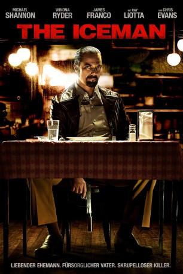
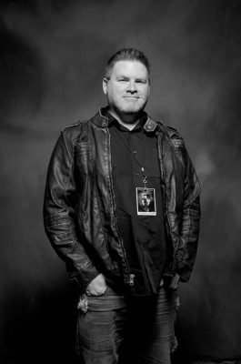

#4528 The Iceman
 
 IMDB-Wertung: 6.9 / 10
IMDB-Wertung: 6.9 / 10  Metascore: 0
Metascore: 0 
Zwischen 1964 und 1986 soll Richard Kuklinski nach eigenen Angaben über 100 Menschen umgebracht haben. Dies ist seine Geschichte: Wegen seiner Kaltblütigkeit wird der für den Mafioso Roy Demeo tätige Kuklinski The Iceman genannt. Doch hinter der eiskalten Fassade steckt ein Mann mit Prinzipien (keine Frauen, keine Kinder) und ein Familienmensch, der alles tut, um für seine Frau Deborah und die Kinder zu sorgen. Für ihre bessere Zukunft möchte er sich mithilfe des Killerkollegen Robert Pronge unabhängig im lukrativen Killer-Geschäft machen. Diesen Affront lässt der Mobster Roy Demeo nicht unbestraft geschehen, wie Kuklinskis Familie sehr schnell herausfinden soll. Doch Demeo hat sich mit dem falschen Hitman angelegt.
Jahr: 2012
Dauer: 105 Minuten
FSK: 16
Land: USA Studio: Millennium EntertainmentTonspuren: DTS - ,
Untertitel:
Auflösung: 1080p (1920x1040) Größe: 5376 MB
Genre: Drama, Krimi, Biographie
Regisseur: Ariel Vromen
Drehbuch: Dan Kwan
Soundtrack:
Darsteller:
 Michael Shannon als Richard Kuklinski
Michael Shannon als Richard Kuklinski Winona Ryder als Deborah Pellicotti
Winona Ryder als Deborah Pellicotti Chris Evans als Mr. Freezy
Chris Evans als Mr. Freezy Ray Liotta als Roy Demeo
Ray Liotta als Roy Demeo David Schwimmer als Josh Rosenthal
David Schwimmer als Josh Rosenthal John Ventimiglia als Mickey Scicoli
John Ventimiglia als Mickey Scicoli Ryan O'Nan als Terry Franzo
Ryan O'Nan als Terry Franzo McKaley Miller als Anabel
McKaley Miller als Anabel James Franco als Marty Freeman
James Franco als Marty Freeman Stephen Dorff als Joey Kuklinski
Stephen Dorff als Joey Kuklinski- Hector Hugo als Tender Bar Earl
 Robert Davi als Leonard Merks
Robert Davi als Leonard Merks Zoran Radanovich als Jimmy
Zoran Radanovich als Jimmy- Kelly Lind als Hospital Nurse
 John P. Fertitta als Uncle Bill
John P. Fertitta als Uncle Bill- Erin Cummings als Ellen
 Jimmy Lee Jr. als Homeless Man
Jimmy Lee Jr. als Homeless Man- Johnny Martin als Marielli
 Nick Gomez als Alvaro
Nick Gomez als Alvaro Vincent Fuentes als JC
Vincent Fuentes als JC- Brian Kinney als Slick BMW Guy
- Ashlynn Ross als Alex
 Weronika Rosati als Livi
Weronika Rosati als Livi Christa Campbell als Adele
Christa Campbell als Adele- Alexandra Doke als Park Little Girl
 Bill Martin Williams als Club Maitre D'
Bill Martin Williams als Club Maitre D'- Lindsay Clift als Club USA Dance Partner
 Katarzyna Wolejnio als Romy
Katarzyna Wolejnio als Romy Tim Bell als Cop
Tim Bell als Cop Garrett Kruithof als Stanley Kuklinski
Garrett Kruithof als Stanley Kuklinski- Ehud Bleiberg als Trial Judge
- Jonathan Vender als Trial Judge
- Tommy Alastra als Documentary Interviewer
 Carl Bailey als Mob Driver , uncredited
Carl Bailey als Mob Driver , uncredited Joseph Blackstone als Frozen Body , uncredited
Joseph Blackstone als Frozen Body , uncredited- Katie Boettcher als Courtroom Attendee , uncredited
-  Johnnie Brannon als Skate Patron , uncredited
- Gavin Casalegno als Roller Skater , uncredited
- Laurie Cummings als Courtroom Observer , uncredited
- Oliver George als Club patron , uncredited
- A. Michelle Harleston als Courtroom Observer , uncredited
 Richard Allan Jones als Movie Theater Patron , uncredited
Richard Allan Jones als Movie Theater Patron , uncredited- Marjorie Ocho Kouns als Aunt Rochelle , uncredited
- Caden Large als Boy on Bike in Park , uncredited
- Joy Leigh als Restaurant Patron , uncredited
 Juliet Reeves London als Girl At Bar , uncredited
Juliet Reeves London als Girl At Bar , uncredited- Téa Mckay als Roller skater , uncredited
- Allen Merritt als Porn Theatre Patron , uncredited
 Danny A. Abeckaser als Dino Lapron
Danny A. Abeckaser als Dino Lapron- Shira Vilensky als Coffee Shop Waitress
Datei: X:\2012(G-M)\Iceman, The (2012, FSK16, 1920x1040).mkv seit 05.10.2016
Festplatte: HD 2012(A-M)
 Es gibt insgesamt 112 Filme in der Gruppe '2012(G-M)'
Es gibt insgesamt 112 Filme in der Gruppe '2012(G-M)'